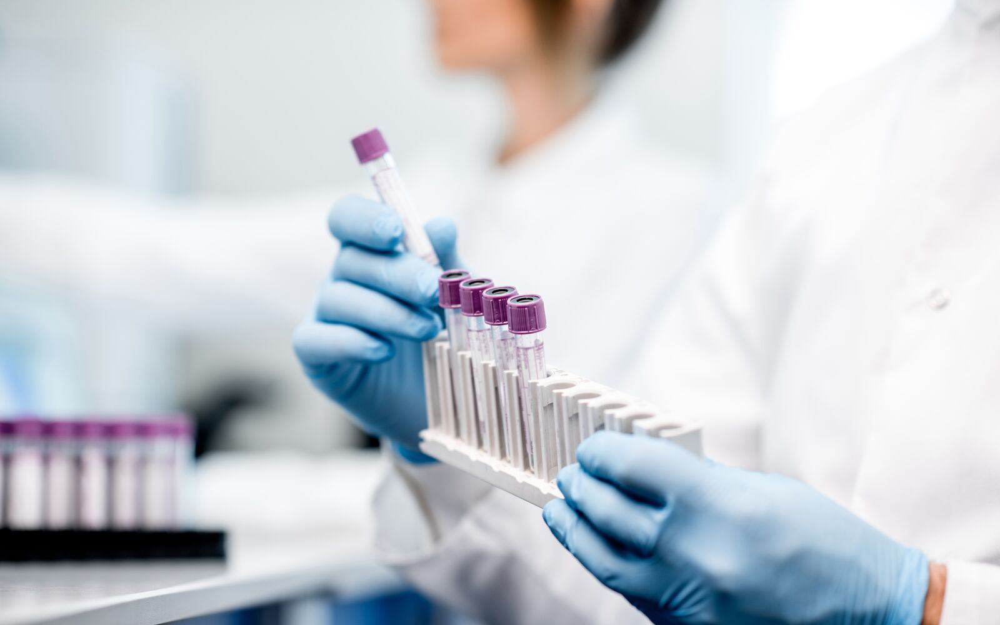
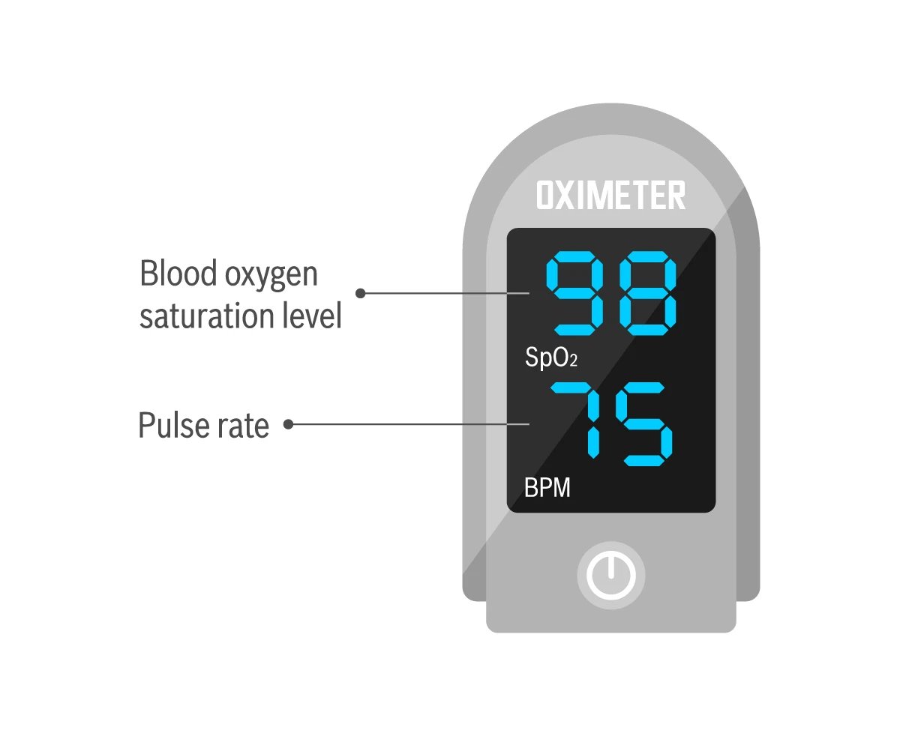
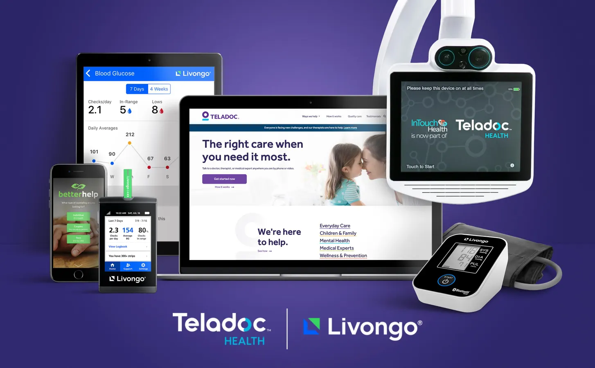
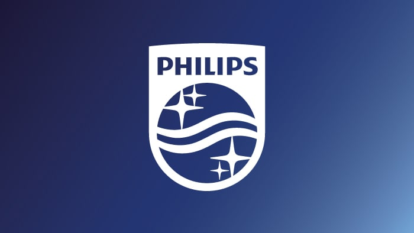
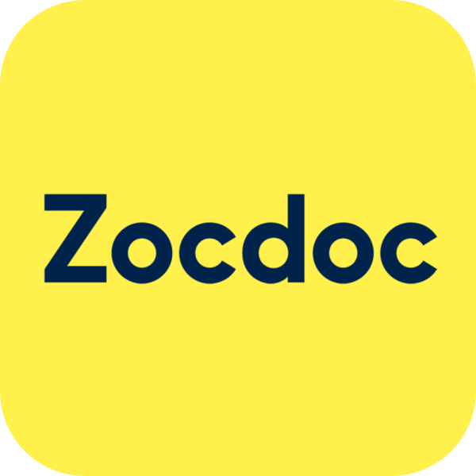

Medicine is the science and practice of diagnosing, treating, and preventing illnesses. Doctors, nurses, and other healthcare professionals work together to keep people healthy, the medical field uses technology, tools, software, and scientific knowledge to save lives every day. Medicine is so relient on technology now, and as technology gets better so does medicine, this is a quick overview on the research I've done in class, and on my own.


A pulse oximeter is a small device that uses light-based technology to measure a person's oxygen levels & heart rate.

Allows for the patients to have remote video appointments with their doctors.

Stores and organizes X-rays, MRI scans and CT for radiologists.

Allows for patients to search for doctors and book appointments online.
MedScan+ is an innovation I'd like to bring about, it's a medical innovation that will enable people to get proper healthcare without leaving their homes. It'll work based off an application based on the symptoms that the user is feeling at the time. It works by analyzing your voice, via microphone, breathing patterns, via your smartphones camera, temperature as well as your breathing pattern, changes in your skin tone, eyes, and any instance that shows that you're sick. Advanced AI will compare all your data with medical cases of others and diagnose your condition accurately in minutes. After the scanning, you'll be connected to a doctor that reviews your results, where you're prescribed medicine, a treatment plan and proper advice. The beauty of this app is that you can order medicine through your smartphone and have it delivered to you on the same day, the app will record your health history and check up on you over certain time periods.
Click the button below to open the interactive Mediscan+ A-Frame demo.
Open Aframes Demo